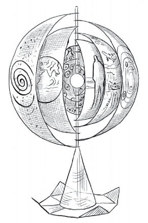

It was freezing harder than ever out there. And quite windless and silent — except for, could it be a distant, snow-muffled wolf-howl? As I closed the shutters tight I saw that the stars, amazingly twinkly and bright against the black sky, were sparking off a glitter in the snow all the way to the edge of the forest. I shivered and hurried back to the fireside and Douglas the cat. Arched back, hair on end, he’d heard that howling too.
Little David on the mantle shelf, with nothing on but a marble loincloth and a sling, looked as cold as the brass Buddha beside him. I bent down and put on another pine-log, drew up my armchair, and settled down to watch the flames …
And then, a knock on the door! On such a night, so many miles from the road!
But I hadn’t imagined that knocking. There my visitor stood, a slight, upright figure, dark against that star-strewn blackness.
"Could I …", he was saying, "could I warm myself up at your fire?"
As he stepped in out of the cold I mumbled something about his having lost his way …
His reply was a laugh that could have meant anything. He came up to the fire and sat down in the other armchair. Douglas, my tail-less Manx, at once jumped onto his lap and began purring loudly – an unheard-of thing for that stand-offish creature. Strange as it seemed, I had the impression they were old friends; and my visitor certainly new the cat’s name.
As I filled the kettle and put it on the hob, and collected some milk and cups and things out of the cupboard, I took a good look at him.
He was on the pale and slender side, and wearing a very long royal-blue coat, with a tall hood and silver buttons. The puzzle was how old he was. What little hair escaped from that hood could have been very fair, or actually white. Was it the innocence of childhood, or the long weathering of age, which left that forehead unlined? His eyes were a rare deep blue, but it was their amused, unblinking steadiness that held me —yet I felt no shyer of him than, obviously, Douglas did. Perhaps that was because of the lightness, or the lightheartedness, or just the light about him, as if he were on the point of sharing a terrific joke with us. As he glanced at the complicated wristwatch he was wearing he actually burst out laughing, and the curious spearhead-shaped stone in the ring on his finger blazed green and columbine red in the firelight.
Having made the tea and handed him a cup (Douglas on his lap, ignoring his milk), I asked him again how he came to lose his way, and where he was from, and … who he was.
He grinned, but didn’t hurry with his tea. It wasn’t till he finished the cup that he replied:
"I’m a traveller from … from a very long way off. It’s not that I’m lost, but…But it’s a long story … Anyway, thank you very much for the tea, and your fireside and my friend here, and perhaps I should be on my way."
But I got him to settle down again, and told him we’d like nothing better than his company and his tale.
He said he’d do his best. And then, suddenly, from the side pocket of his long overcoat, he produced that fabulous thing. It came out small, a mere bud which immediately opened out in his hand like a flower.
He set it up on the table between us. It was a flower with curious and gorgeous petals, an onion with bright painted skins and a crystal core, a ship-a-sailing with all eight spinnakers bellying in the wind. He called it his Deep Map, in contrast to the flat maps people use, and said that without it we wouldn’t follow his adventures at all. He explained that it showed clearly where he came from and was going to, and the scenes of his adventures with the terrible Wormwolf. It revealed a living Space-dweller the regular astronomers hadn’t discovered yet, and gave glimpses into the lands of the Gnomes and the Goblins and the Elves. And in fact it was a record of his great Space Probe, his journey to the very Centre of the world. He called this strange chart of his Youniverse, spelt Y o u n i v e r s e ; and he said it was his Magic Tool Chest, or Wizard’s Bag of Tricks. Armed with this device, why anyone could …
He stopped short. He’d noticed the look on my face. He appeared to be a human, and a quite brilliantly sane one at that. But …
"Yes. You’re wondering whether you’re entertaining an angel — or is it a devil? —unawares, or more likely a refugee from some institution. Well, wait till you’ve heard me. And don’t hold me to the details of my story. If they often seem wild to you, the facts they celebrate are, I promise you, still wilder."
I assured my astonishing visitor of his welcome and my keenness to hear his story. And I fixed him up with more tea and toast and jam, and piled some logs onto the fire, while he stretched out his feet to the blaze and began to talk, to the steady accompaniment of Douglas’ purring.
(All books presented in our Book Extracts are available via Amazon or our website shop.)